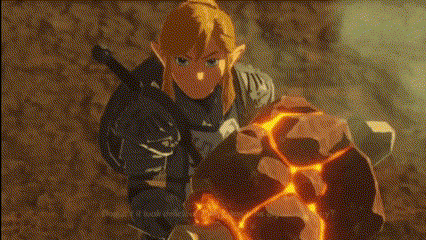

I think everybody knows Link by now. The chosen hero of Hyrule, bearer of Sword that Seals Darkness, and the ability to eat almost anything.
Being Hyrule's protector is not an easy task, but Link seems more than capable to fulfill that role. If you are wondering how he does it, it might be due to his diet.
Somebody once said "Your daily meals are more important than your training. It's the nutrition you consume that builds your body." And Link can definetly eat a lot and almost anything, and that's why today, I brought you three of the many many recipes from Breath of the Wild, so that you can be strong like Link.

So you want to know more about Link?
I can give you a brief explanation about who Link is.
Would you like to see the code of this website?